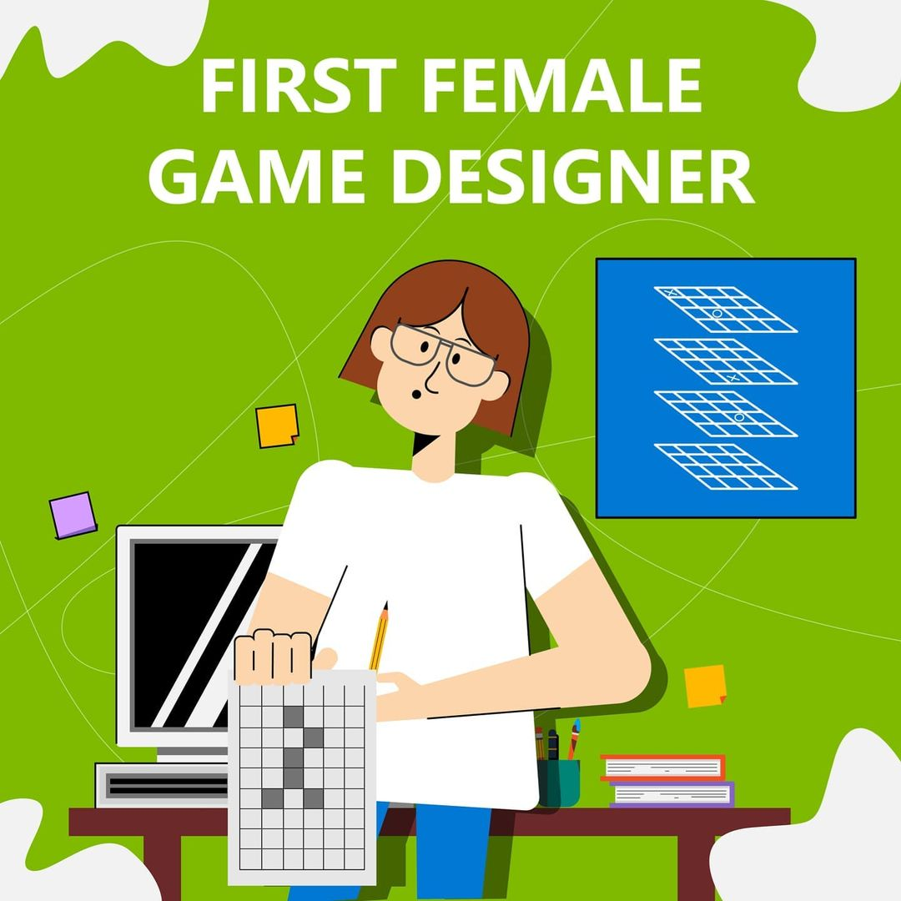

|  |
Carol Shaw é/foi a primeira mulher a programar jogos, chamando muita atenção. Formada em Ciências da Computação pela universidade de Berkeley, Carol foi contratada pela Atari em 1978.
No inicio dos anos 90, Carol se aposentou, antes mesmo de chegar à terceira idade, graças ao imenso sucesso de River Raid. Desde então, ela passou a realizar trabalhos voluntários em organizações relacionadas à tecnologia.
Conheça a vida da grande Carol Shaw, a primeira mulher a programar jogos e ganhar destaque.